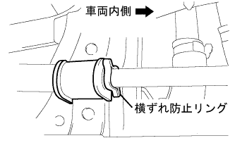

Stabilizer Bar Rear (FF) Installation |
| 1. Install Stabilizer Bushing Rear |
 |
Install the 2 rear stabilizer bushings to the rear stabilizer bar.
| 2. Install Stabilizer Bar Rear |
 |
Install the 2 rear stabilizer bar brackets No.1 and the rear stabilizer bar to the rear suspension member with the 4 bolts.
| 3. Install Rear Stabilizer Link Assembly LH |
 |
Temporarily tighten the rear stabilizer link assembly LH and 2 rear stabilizer cushions with the nut as shown in the illustration.
 |
Install the nut.
|
Fully tighten the nut.
| 4. Install Rear Stabilizer Link Assembly RH |
| 5. Install Rear Suspension Member Brace LH |
 |
Install the rear suspension member brace LH with the 3 bolts.